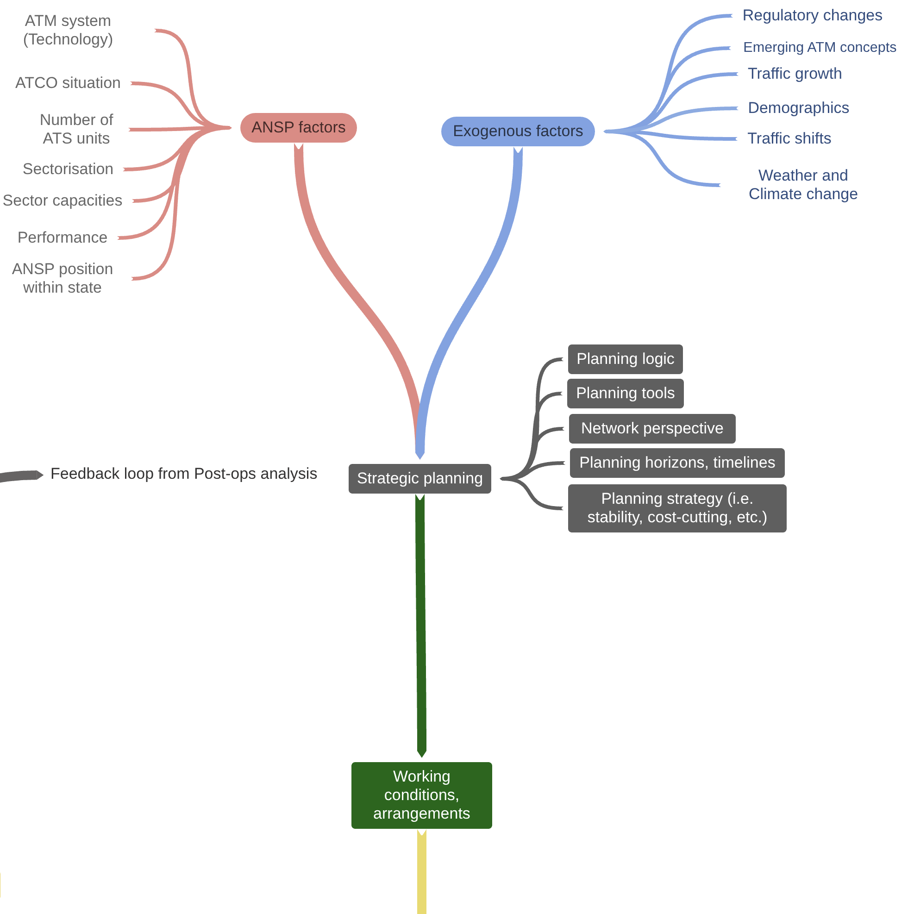

Strategic workforce planning
Workforce planning aligns future demand with recruitment, training capacity and controller availability. Long lead times make the quality and delivery of these plans consequential.
Planning the workforce

The first step in the process is the strategic planning carried out by ANSPs. The term strategic can be ambiguous: in management discussions, it denotes the mid- to long-term planning horizon, typically spanning 3 to 5 years, while in operations, strategic plans are made for the upcoming 12 months (as opposed to tactical plans, which typically refer to the day of operations). In this model, we use the term in a management sense, though we expect ANSPs to revisit these plans annually and make adjustments as necessary.
When it comes to strategic planning, the tools used, the methodology applied, and the time horizon are key. We expect ANSPs to consider the network perspective, at least by taking into account the plans and performance of neighbouring ANSPs and adjacent ATS units. Finally, there are several approaches to choose from: ANSPs can focus on increasing efficiency, ensuring resource stability, or building capacity, among others. The choices made at this stage, along with the overall quality and thoroughness of the planning, will affect all subsequent steps.
Some ANSPs have sophisticated, multi-layered planning processes that span different time horizons and involve multiple iterations (for example, DFS is running a planning process that is based on a long-term plan, which is broken down to annual rostering plans, which are revised 60 and 30 days before operation, and finalised 48-24 hours ahead).
For other ANSPs, the strategic planning process is already constrained by national regulation and administrative procedures, where headcounts, staffing levels, recruitments, etc. need to be agreed and approved by the Ministry of Transport or other government bodies (as is the case in Spain, Greece, France, among others).
Planning challenges and measures
Strategic Planning encompasses the processes through which ANSPs forecast future workforce requirements and translate those forecasts into recruitment, training and workforce development decisions. It connects anticipated operational demand with the future availability of qualified controllers.
Strategic Planning was classified as Medium for both Incidence and Severity: it featured regularly in stakeholder discussions and was reported as a significant constraint by a substantial number of ANSPs, without being among the most critical bottlenecks of the lifecycle. Its relevance lies in the fact that weaknesses at this stage tend to propagate throughout the rest of the pipeline.
The consultation showed broad agreement on the importance of long-term workforce planning and the difficulty of forecasting staffing requirements several years ahead of their operational effect, considering both future traffic and the capacity limits of the training system. The main difference across ANSPs lies in their flexibility to act on those plans: some operate with considerable autonomy over recruitment and staffing, while others remain subject to budgetary approvals, public-sector employment frameworks or government staffing controls.
The challenges identified within Strategic Planning are primarily associated with uncertainty. Stakeholders consistently highlighted the difficulty of aligning long-term workforce decisions with traffic forecasts, organisational constraints and the delayed effects inherent to the ATCO training process. Together, these factors reduce the ability of ANSPs to anticipate future workforce requirements with confidence and increase the risk of either under- or over-recruitment.
Challenges reported in Strategic Planning (Source: Consortium assessment)
| ID | Challenge | Rationale | ANSPs reporting |
|---|---|---|---|
| T-SP.1 | Traffic forecast volatility | Traffic forecasts used to determine future staffing requirements are updated regularly, whereas the ATCO training process typically requires several years to convert candidates to ATCOs. As a result, recruitment decisions are often based on demand assumptions that may change significantly before trainees enter operations. | 6 (35%) |
| T-SP.2 | Pressure to minimise staffing levels | Cost-efficiency objectives and pressure to contain user charges can incentivise workforce planning approaches based on minimum staffing levels. This reduces the margin available to absorb forecast uncertainty, traffic surges or unforeseen operational requirements. | 6 (35%) |
| T-SP.3 | Delayed consequences of workforce planning decisions | The length of the ATCO training process means that deficiencies in recruitment and workforce planning may remain invisible for several years before materialising as operational staffing shortages. Consequently, corrective measures often become effective only after significant delays. | 5 (29%) |
| T-SP.4 | Annual approval of workforce positions | In some ANSPs, operational positions require periodic approval through government or budgetary processes. This creates uncertainty regarding the long-term availability of posts and complicates multi-year workforce and training planning. | 3 (18%) |
The challenges identified by stakeholders suggest that Strategic Planning is fundamentally constrained by the mismatch between the long-term nature of workforce development and the uncertainty surrounding future operational requirements. Traffic forecasts, budgetary conditions, and staffing approvals may change relatively quickly, whereas producing ATCOs requires decisions made several years in advance.
The most frequently reported challenge concerns the volatility of traffic forecasts, reported by eight ANSPs. Since training a new ATCO typically takes around three years, recruitment decisions are often based on demand assumptions that may change significantly before trainees become operational. This creates uncertainty regarding both the number and timing of future workforce requirements. Financial and institutional constraints further complicate the planning process. Several ANSPs highlighted that pressure to minimise staffing levels can reduce the margin available to absorb forecast uncertainty, while others noted that annual government approval procedures for operational positions make it difficult to commit to long-term workforce plans despite the multi-year duration of the training process.
Stakeholders also emphasised that workforce planning deficiencies rarely become visible immediately. Due to the long lead times associated with training, the consequences of insufficient recruitment decisions may only emerge several years later, when operational staffing shortages become apparent and corrective measures are no longer capable of delivering an immediate effect. Consequently, the challenges identified within this key area illustrate how uncertainty, institutional constraints and delayed feedback mechanisms combine to make Strategic Planning a critical enabler of long-term workforce stability.
The solutions identified for Strategic Planning focus on improving the quality, robustness and responsiveness of workforce planning processes. Rather than addressing workforce shortages through additional recruitment alone, the proposed measures seek to improve the ability of ANSPs to anticipate future requirements, align recruitment activity with training capacity and reduce the uncertainty associated with long planning horizons.
Main solutions for Strategic Planning (Source: Consortium assessment)
| ID | Solution | Challenges addressed | Time horizon | Control over the solution | Model variables affected |
|---|---|---|---|---|---|
| T-SP.BP.1 | Maintain a continuously updated workforce plan | T-SP.1 T-SP.3 | Medium | Internal | Intake |
| T-SP.BP.2 | Plan workforce requirements against peak-demand periods | T-SP.1 | Medium | Internal | Intake |
| T-SP.BP.3 | Align recruitment intake with training capacity | T-SP.3 | Medium | Internal | Training capacity |
| T-SP.BP.4 | Initiate recruitment in line with training lead times | T-SP.3 | Medium | Internal | Intake |
| T-SP.BP.5 | Implement continuous recruitment processes | T-SP.3 | Medium | Internal | Intake |
| T-SP.FP.1 | Develop long-term retirement forecasting tools | T-SP.1 T-SP.3 | Medium | Internal + Technology | Intake |
| T-SP.FP.2 | Integrate traffic and training-capacity scenarios into workforce planning | T-SP.1 T-SP.3 | Medium | Internal | Intake Training capacity |
| T-SP.FP.3 | Maintain a continuously updated workforce plan | T-SP.3 | Medium | Internal + Technology | Intake |
The solutions proposed by stakeholders recognise that the challenges identified within Strategic Planning cannot be addressed by increasing recruitment alone. Instead, they focus on improving the quality, robustness and responsiveness of workforce planning processes so that workforce decisions remain aligned with future operational requirements despite the long lead times of the ATCO training process. Accordingly, most identified measures influence the Intake variable, while a smaller number focus on ensuring that recruitment plans remain consistent with the available Training Capacity.
The best practices primarily address the uncertainty created by traffic forecast volatility and the delayed consequences of workforce planning decisions. Several ANSPs highlighted the importance of maintaining continuously updated workforce plans based on rolling planning horizons rather than relying on static long-term forecasts. Similarly, planning against peak-demand periods rather than annual average traffic seeks to reduce the risk of underestimating future staffing requirements during periods when operational capacity is most constrained.
Other best practices focus on improving the relationship between recruitment and training capacity. Aligning intake volumes with the capacity of the training process ensures that recruitment targets remain realistic and prevents additional trainees from entering a system that is already constrained by training bottlenecks. Likewise, initiating recruitment sufficiently early and maintaining continuous recruitment processes helps create a more stable flow of trainees and reduces the risk of extended gaps between recruitment campaigns.
The future practices build on these principles by introducing more sophisticated forecasting and modelling capabilities. Long-term retirement forecasting tools seek to anticipate future workforce losses before shortages materialise, while integrated traffic and training-capacity scenarios allow recruitment volumes to be adjusted according to both expected demand and the ability of the training system to absorb additional trainees. Together, these measures move workforce planning away from reactive, stop-start recruitment cycles towards a continuous, evidence-based planning process capable of maintaining a closer alignment between future controller supply and operational requirements.
This continuous, evidence-based planning process better aligns with the logic and process of the performance and charging scheme performance planning cycles. The performance and charging scheme already feature tools which allow for flexibility around the cost efficiency implications associated with temporary surges in recruitment and training costs aimed at resolving the ATCO gap. In addition to the existing flexibility, ANSPs may explore if/how the costs of ATCO training may be capitalised and spread along the operational time of the ATCOs, rather than expensed at the time of training. This could result in a more predictable and steadier cost profile, which could also be beneficial for Airspace Users, as it would limit surges in unit rates.